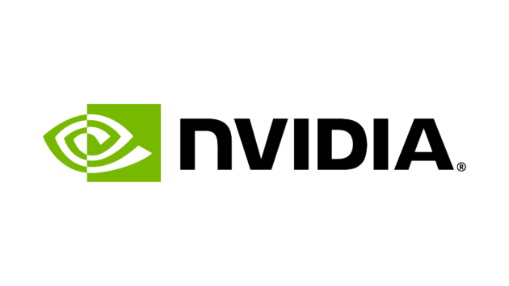

The Future of Semiconductors
Who Will Replace NVIDIA?
Global Big Techs in AI Semiconductor
Development Team Up Against
NVIDIA
Global big tech companies are accelerating the development of their own AI semiconductors to break away from NVIDIA’s monopolistic structure. Leading firms like Microsoft, Google, Amazon, and AMD are proactively working on independent AI semiconductor solutions. Their goal is to ensure stable supply chains and enhance competitiveness in AI markets, creating optimal conditions for their products and services.
By Chang-hoi Ho, Senior Researcher, Institute of Information & Communications Technology Planning & Evaluation (IITP)
NVIDIA
Maintaining over 80% of the AI semiconductor market with continued GPU and solution innovations
POINT
- Despite regulatory risks and the possibility of stiffer competition amid the anti NVIDIA movement, NVIDIA is strengthening its dominance in the AI semiconductor market based on increased AI demand and expanded investments by global tech companies.
- Just three months after introducing the Blackwell platform, NVIDIA unveiled Rubin, a next generation AI GPU platform with enhanced performance, securing its unrivaled position in the AI semiconductor market.
- NVIDIA has evolved into a platform company, offering GPUs, CPUs, AI servers, and software in an integrated ecosystem.
Intel
Driving US semiconductor independence with the latest AI chip, Gaudi 3
POINT
- Intel has launched its latest AI semiconductor, Gaudi 3, along with the Xeon 6 CPU for servers, aiming to achieve a rebound in market share.
- Intel is deploying Gaudi 3 for collaboration with global server providers such as Dell Technologies, HPE, and Supermicro, as well as Naver in Korea.
- Following disappointing secondquarter results in 2024, Intel has undertaken significant restructuring, including over 10,000 layoffs, capital expenditure cuts, and dividend suspensions, to accelerate its recovery.
AMD
Bolstering competitiveness through bold acquisitions and investments
POINT
- AMD plans to massproduce the upgraded MI325X by the end of 2024, followed by the release of MI350 in 2025 and MI400 in 2026 as part of its longterm AI strategy.
- By acquiring companies such as Silo AI and ZT Systems, AMD is expanding its AI ecosystem and strengthening its capacity for tailored support to gain an edge over NVIDIA.
- AMD is intensifying investments in AI solution development and AI infrastructure design, focusing not only on semiconductors but also on software ecosystems.
Microsoft
Enhancing the AI ecosystem with proprietary semiconductor development and OpenAI collaboration
POINT
-Microsoft has introduced Maia 100, a customdesigned chip for AI training and inference.
-*Microsoft’s Azure AI infrastructure integrates GPUs from NVIDIA and AMD alongside its Maia 100.
- By developing its own AI accelerator chips, Microsoft is strengthening vertical integration of generative AI infrastructure within Azure Cloud.
- Microsoft has invested approximately $13 billion in OpenAI across three funding rounds, ensuring OpenAI’s services are integrated into Microsoft applications and the Azure Cloud platform to promote mutual growth in the generative AI market.
Amazon
Developing proprietary AI chips for Amazon’s data centers
POINT
- Amazon utilizes Trainium accelerator chips and highperformance Inferentia chips for training and deployment of largescale AI models.
-*The Trainium 2 chip, expected to launch by yearend, is currently in testing for largescale AI model training.
-*Apple is using Amazon’s Trainium 2 chip to train its Apple Intelligence models.
- Amazon aims to integrate Trainium 2, the latest version of its proprietary AI chip, into its data centers by the end of the year.
- Similar to how Microsoft uses Azure AI to deploy OpenAI’s models, AWS intends to strengthen its AI competitiveness through Claude models.
-*Amazon invested an additional $4 billion in Anthropic, a rival to OpenAI, to solidify its position in generative AI (Nov. 22, 2024).
Scaling up data centers with the new AI-dedicated semiconductor TPU v5p
POINT
- Tensor Processing Unit (TPU) is an AI semiconductor chip developed by Google.
- The latest TPU v5p has been officially launched and integrated into AI hypercomputers to enhance Gemini.
-*Gemini: Google’s multimodal AI model capable of processing text, images, audio, and video
- Google is scaling up its data centers using optimized AI infrastructure.